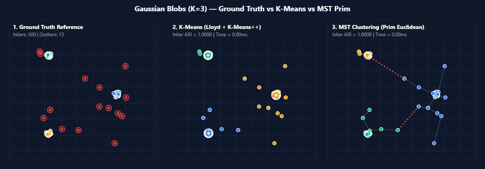
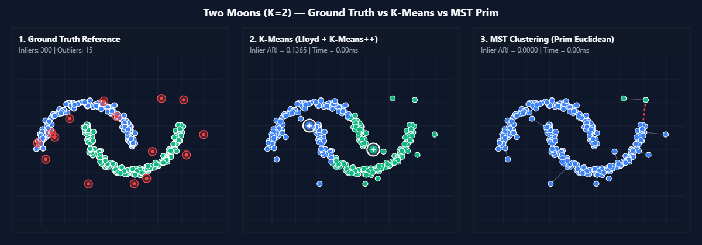
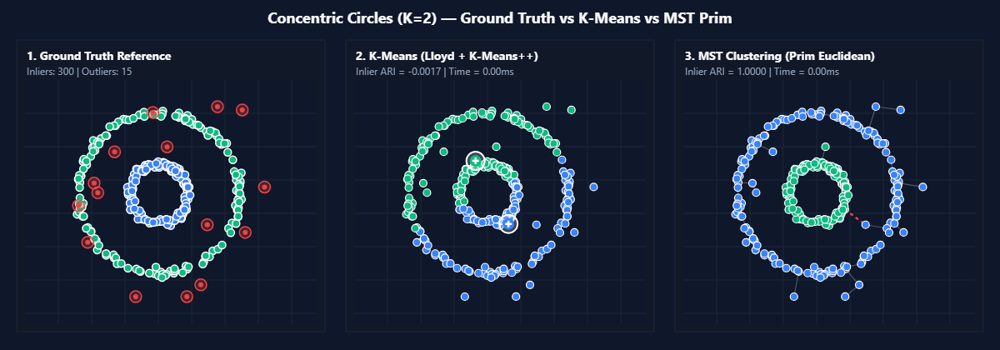
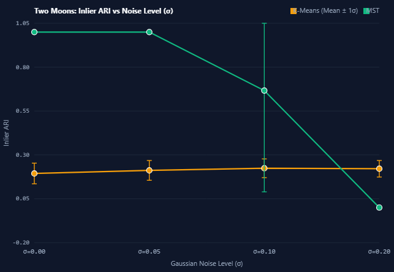
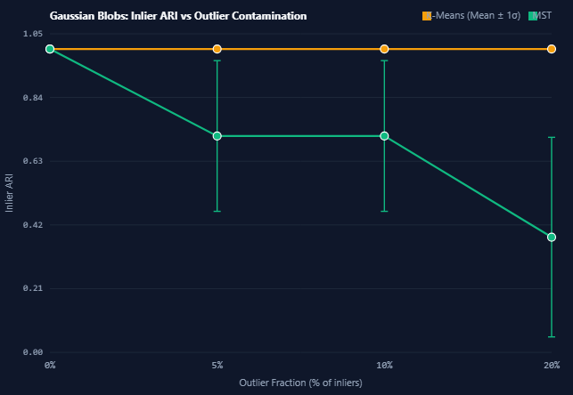
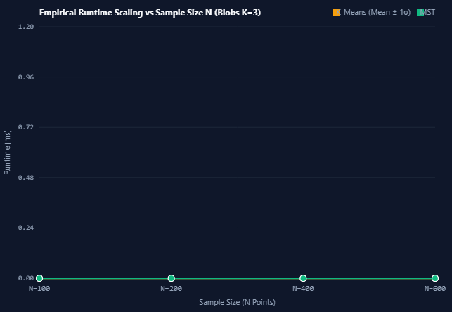

A Comparative Quantitative Investigation of Graph-Theoretic Spanning Forest Clustering and Centroid Voronoi Partitioning Under Controlled Topological and Stochastic Perturbations
Student Investigators
Himanshu Gupta • Alloc. No. 19
Parth Yadav • Project Partner
Academic Institution
Manav Rachna International Institute of Research and Studies
Department of Computer Science and Engineering • MRIIRS
Methodological Gaps in Existing Studies:
Minimizes Inertia (Within-Cluster Sum of Squares):
Complete Euclidean Graph $G = (V, E)$, $|V| = N$:
Convex, isotropic spherical clusters ($100$ pts/cluster). Linearly separable by hyperplanes.

Ground Truth vs K-Means vs MSTInterlocking semicircular arcs ($150$ pts/crescent). Non-convex; requires manifold transitivity.

MST traces arcs; K-Means cuts throughNested circular rings ($150$ pts/ring). Non-convex; centroids coincide at $(0, 0)$.

MST separates rings; K-Means splits| Dataset Family | K | K-Means Inlier ARI | MST Inlier ARI |
|---|---|---|---|
| Gaussian Blobs | 3 | 1.0000 ± 0.0000 | 1.0000 ± 0.0000 |
| Two Moons | 2 | 0.1941 ± 0.0588 | 1.0000 ± 0.0000 |
| Concentric Circles | 2 | -0.0019 ± 0.0012 | 1.0000 ± 0.0000 |
Topological Confirmation:

Figure 8.4: Inlier ARI vs. Additive Gaussian Noise (σ ∈ [0.00, 0.20])
Figure 8.5: Inlier ARI vs. Outlier Contamination (η ∈ [0%, 20%])| N | K-Means Mean | MST Prim Mean | Ratio of Means | Ratio of Medians |
|---|---|---|---|---|
| 100 | 0.1000 ms | 0.1400 ms | 1.40× | 2.00× |
| 200 | 0.1600 ms | 0.3800 ms | 2.38× | 1.50× |
| 400 | 0.1400 ms | 0.9400 ms | 6.71× | 10.00× |
| 600 | 0.1400 ms | 1.7000 ms | 12.14× | 17.00× |

Figure 8.7: Wall-Clock Runtime (ms) vs. Sample Size NWe invite questions, critiques, and discussion from the evaluation committee.
Himanshu Gupta (Alloc. No. 19) • Parth Yadav
GitHub: Himanshu102931/MST-KMeans-Robustness-Analysis
Welcome to our final academic project presentation.